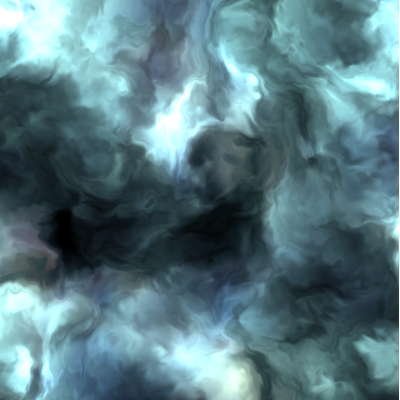
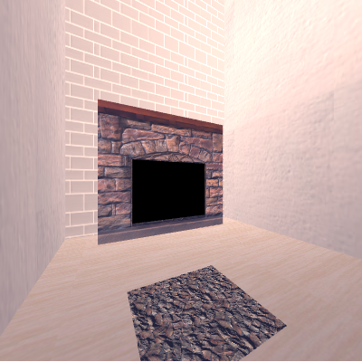
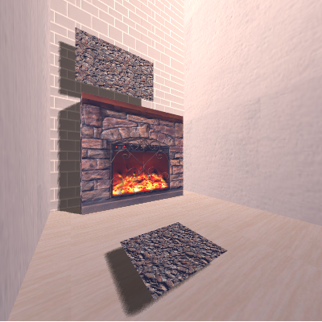
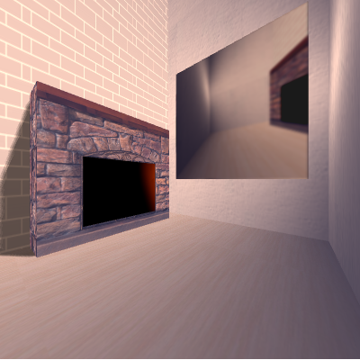
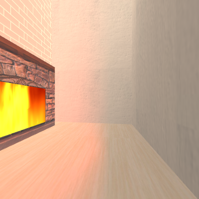
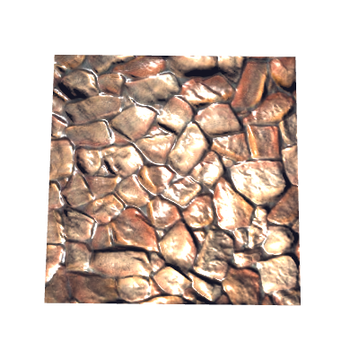

个人简介
项 目 集
图 形 学
首 页
Eye
Target
Up
初 次 体 验 Web 3D
红轴对应X轴
绿轴对应Y轴
红轴对应Z轴
参数Eye，对应视角(眼睛)位置
参数Target，对应模型(目标)相对位置
参数Up，对应上方向(相机正方向)
(按上,下方向键，调整视角，模型，上方向位置)
Source>>
噪声
Perlin Noise模拟水墨

法向量贴图
Normal Map(凹凸贴图)

阴影
Shadow Map

F B O
Frame Buffer Object + 高斯模糊

多光源渲染
火焰光 + 点光源

Specular(镜面反射)
镜面反射 + 法向量贴图

模 拟 示 例